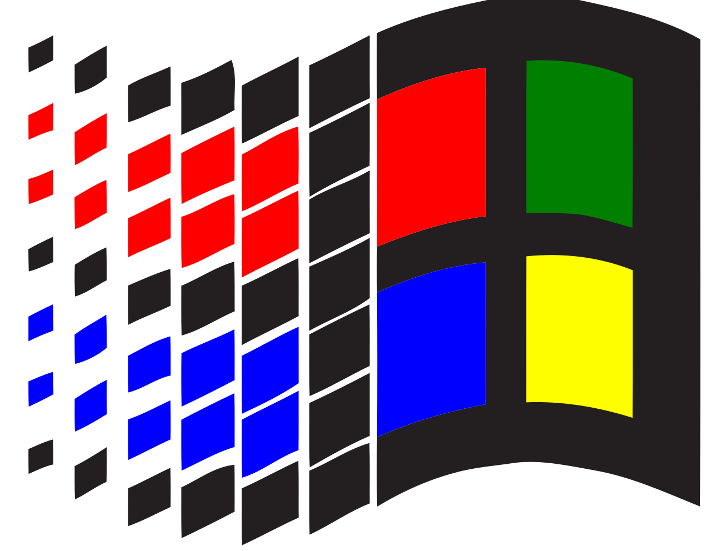

Windows vs Ubuntu vs OSX

CHRISTIAN LÓPEZ RODRÍGUEZ
¿Quén son?
Enxeñeiro informático
Drupal Back&Front developer => (JS)
ML, NLP & SA developer
Co-fundador de galiciacorre
@christianlrcalo - clopezrodriguez95@gmail.com
Windows vs Ubuntu vs OSX
Descripción básica de cada un dos Sistemas Operativos
Ventaxas e desventaxas de cada Sistema Operativo
Recomendación de uso según en qúe caso
Debate entre os asistentes
Experiencia persoal/opinión persoal
Windows
Windows
O SO máis usado e coñecido
Destinado para uso diario e familiar
Versións para empreseas e servidores
Soporte case instantáneo en caso de erros
É un SO moi robusto, seguro e con sistemas de autoreparación
Ubuntu
Ubuntu
O SO libre máis coñecido
Destinado para traballar, non pra pasar o rato
Versións para servidores
Soporte basado na comunidade
SO simple e directo pero aberto a calquera modificación
OSX
OSX
O SO coñecido como os dos "pijos"
Rapidez, simpleza e intuitivo
Utilidades propias pra case calquer cousa
Destinado a diseñadores gráficos
Só válido nos equipos de Apple
¿Qué SO é o mellor/recomendas?
WINDOWS
UBUNTU
OSX
¡Todos son os mellores!
DEBATE!
¿Estades de acordo conmigo?
Windows é moi caro; OSX é de pijos/ricos; Ubuntu mola!
¿Nunca se debe pagar por un SO?